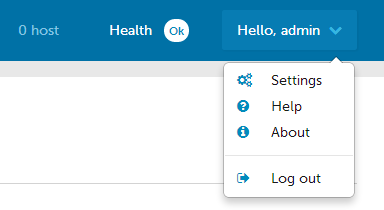
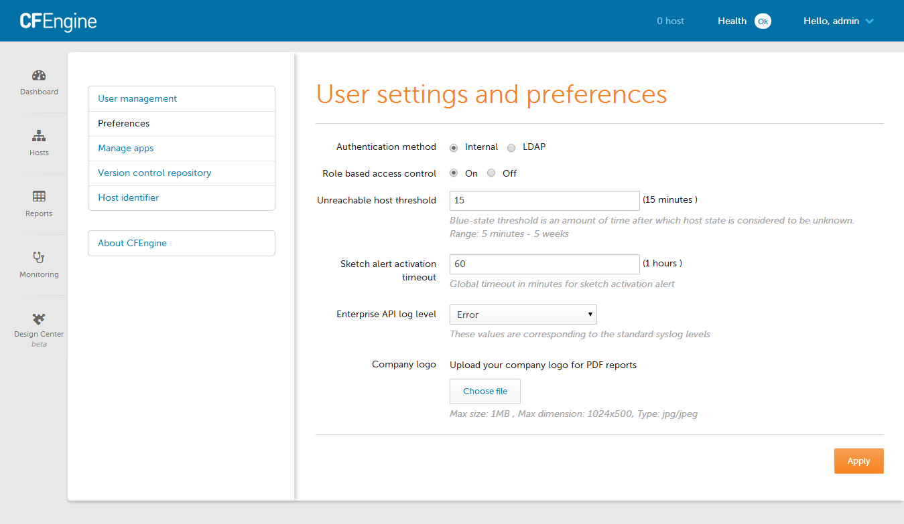
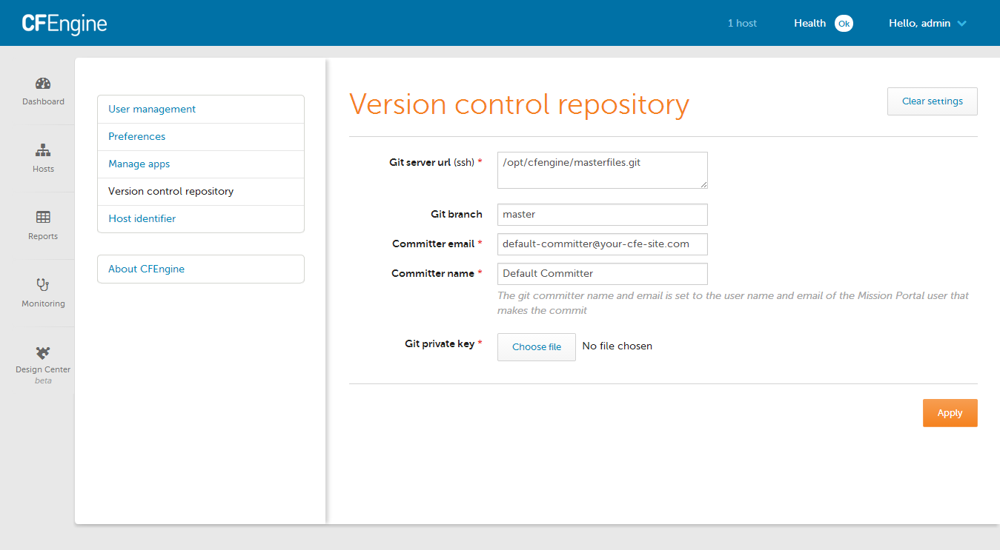
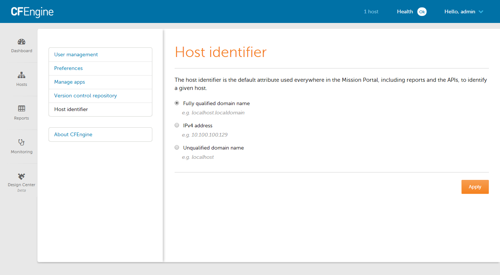

Settings
A variety of CFEngine and system properties can be changed in the Settings view.
- Opening Settings
- Preferences
- User Management
- Role Management
- Manage Apps
- Version Control Repository
- Host Identifier
- About CFEngine
Opening Settings

Settings are accessible from any view of the mission portal, from the drop down in the top right hand corner.
Preferences

User settings and preferences allows the CFEngine Enterprise administrator to change various options, including:
- User authentication
- Turn on or off RBAC
- Log level
- Customize the user experience with the organization logo
User Management

User management is for adding or adjusting CFEngine Enterprise UI users, including their name, role, and password.
Role Management

Roles limit access to host data and access to shared assets like saved reports and dashboards.
Roles limit access to which hosts can be seen based on the classes reported by
the host. For example if you want to limit a users ability to report only on
hosts in the "North American Data Center" you could setup a role that includes
only the location_nadc class.
When multiple roles are assigned to a user, the user can access only resources that match the most restrictive role across all of their roles. For example, if you have the admin role and a role that matches zero hosts, the user will not see any hosts in Mission Portal. A shared report will only be accessible to a user if the user has all roles that the report was restricted to.
In order to access a shared reports or dashboard the use must have all roles that the report or dashboard was shared with.
In order to see a host, none of the classes reported by the host can match the class exclusions from any role the user has.
Users without a role will not be able to see any hosts in Mission Portal.
Role suse:
- Class include: SUSE
- Class exclude: empty
Role cfengine_3:
- Class include: cfengine_3
- Class exclude: empty
Role no_windows
- Class include: cfengine_3
- Class exclude: windows
Role windows_ubuntu
- Class include: windows
- Class include: ubuntu
- Class exclude: empty
User one has role SUSE.
User two has roles no_windows and cfengine_3.
User three has roles windows_ubuntu and no_windows.
A report shared with SUSE and no_windows will not be seen by any of the
listed users.
A report shared with no_windows and cfengine_3 will only be seen by user
two.
A report shared with SUSE will be seen by user one.
User one will only be able to see hosts that report the SUSE class.
User two will be able to see all hosts that have not reported the windows
class.
User three will only be able to see hosts that have reported the ubuntu class.
Predefined Roles:
- admin - The admin role can see everything and do anything.
- cf_remoteagent - This role allows execution of cf-runagent. It can be used from within Design Center to troubleshoot hosts that have failed sketch activations.
Manage Apps

Application settings can help adjust some of CFEngine Enterprise UI app features, including the order in which the apps appear and their status (on or off).
Version Control Repository

The repository holding the organization's masterfiles can be adjusted on the Version Control Repository screen.
Host Identifier

Host identity for the server can be set within settings, and can be adjusted to refer to the FQDN, IP address, or an unqualified domain name.
About CFEngine

The About CFEngine screen contains important information about the specific version of CFEngine being used, license information, and more.